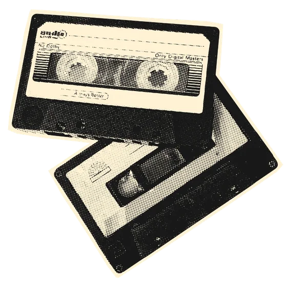

Music player
These are some songs I dedicate to you!
These songs make me think about you. I want you to also hear them so you know I think about you.

NOW PLAYING
0:000:00
Music player
These songs make me think about you. I want you to also hear them so you know I think about you.
